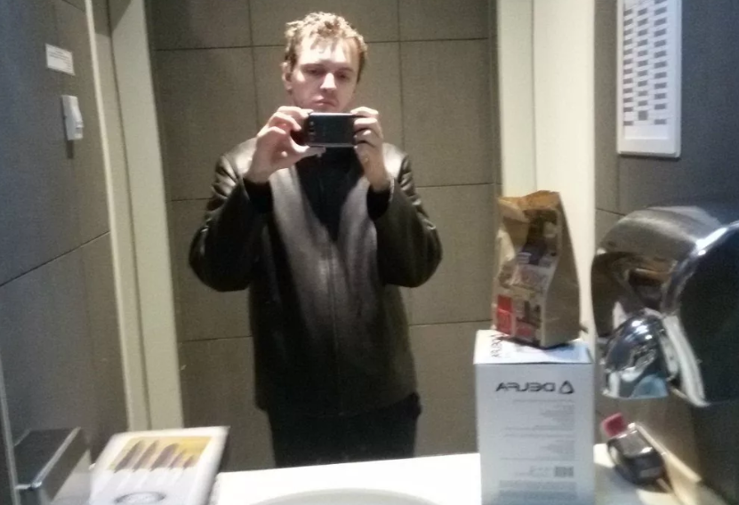
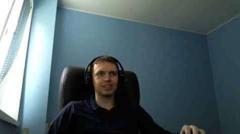

Виталий Громяко/Цаль
Папіч,тобто Віталій «Arthas»,популярний стрімер .Набрав популярність через ігру таку як «Dota 2»,показував дуже хороший рівень гри,займав топ 3 світу
A$KET,мізантроп,велика людина з ВЕЛИКОЇ ЛІТЕРИ
Дитинство
Крім того, за його словами, має незакінчену середню освіту, оскільки кинув школу після 8 класу. До завоювання «Найбільшої» слави і визнання, він вкрай рідко виходив на вулицю у вільний час, за винятком вечірніх пробіжок або походів в магазин. З появою в початкових класах домашнього комп'ютера, почав багато часу проводити за іграми і мав дуже вузьке коло спілкування.Цитата: «У мене було щасливе дитинство, адже я ні про що не замислювався. Просто приходив зі школи, а потім йшов грати в футбол. Навіть коли хлопців не було, він просто починав робити набівали, граючи в соло ».

Незабаром майбутня зірка інтернету зареєструвався на форумі «prodota.ru» і починає грати в ICCup, навіть увійшов в топ-3 таблиці лідерів на цій платформі в п'ятому сезоні.
З 16 років, хлопець починає грати в покер, реєструє акаунт на ресурсі «PokerStars», де гравці грають онлайн на гроші. Успішна гра почала приносити Папанов перші гроші - він зізнався, що в місяць йому вдавалося заробляти близько 300 доларів. До речі, Папіч ще захоплюється цією грою і іноді дає покер-стрім на своєму Youtube-каналі.
Ще одним заробітком юного ділка в ті часи стала перепродаж внутрішньоігрових речей в «Dota 2». 
ПАПІЧ-TWICH. стрім
Завдяки хорошій грі, відео Папіча набирають велику популярність серед глядачів на території Росії, України та інших російськомовних фанатів «Dota 2». За перші вісім місяців стрімінга, Артас піднявся з 5000 MMP до 7000.
Але не тільки високі ігрові результати принесли блогеру стрімку популярність. В першу чергу, Папіч запам'ятався гравцям завдяки своєму неоднозначному і зухвалої поведінки. Культовими стали гра Артаса на врайскінге, постійні Рейджена на все навколо. 
Така поведінка стримера викликало величезний хайп серед глядачів, які постійно дошкуляли і всяко провокували Папіча на агресивну поведінку. Так, вони часто влаштовували DDoS атаки, а також намагалися зламати гру «Царя» геймруіном і стрімснайпінгом, що часто виводило його з себе. Порушення правил системи Твіч-платформи (нецензурна лексика і образу інших гравців) приводили до багаторазової блокування облікового запису Артаса. Основна причина блокування каналу - скарги глядачів через розпалювання ненависті.Наприклад, в кінці 2018 - початку 2019 роки не проходило, в буквальному сенсі і двох тижнів, як в новинній стрічці не з'явилася б новина про чергову блокування Twich-каналу Папіча. У травні 2019 року, канал «Найбільшого» навіть заблокували під час чергового стріму.
Все це призводило до того, що Папіч погрожував неодноразово закинути стрім доту. «Новий день - нове життя», - стверджував Артас, але щоразу повертався до Стрім, адже як він сам зізнавався, стрім приносять йому непоганий дохід, а його цільова аудиторія - саме «Дотері».
5 червня 2019 року, Twich-канал все ж отримав перманентний (вічний) бан на майданчику і розірвання партнерської угоди. Офіційною причиною бана стали багаторазові випадки грубого порушення призначених для користувача правил Twich-майданчика. Сам Дотері поставився до блокування з часткою іронії: «Ну наканец-та! Але я все ще на ютубі, навіщо то щось стрімлю ... », - зазначив він.
Папіч живий! Чим займається зараз?
Цікаву тему для чуток підкинули користувачі Інтернет в 2021 році, коли закидали інтерв'юера Дмитра Гордона проханнями зробити випуск з папічем. Папіч і Гордон ще не зустрілися, але розвиток цієї історії інтригує.